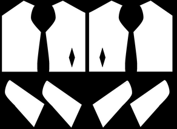
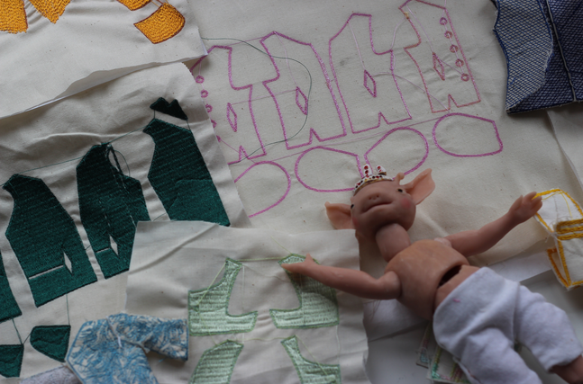
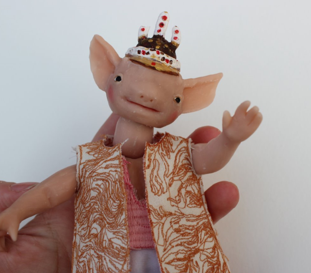
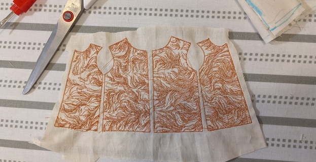
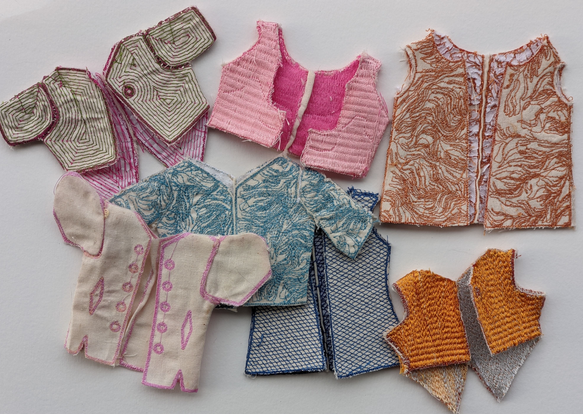
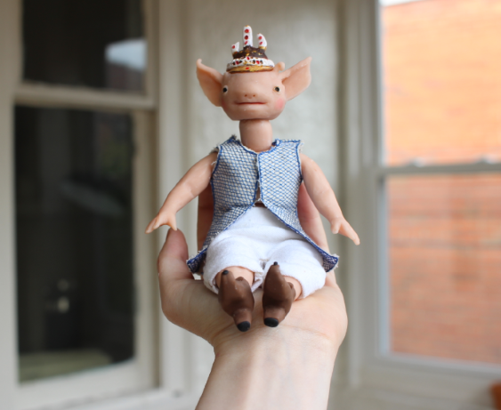
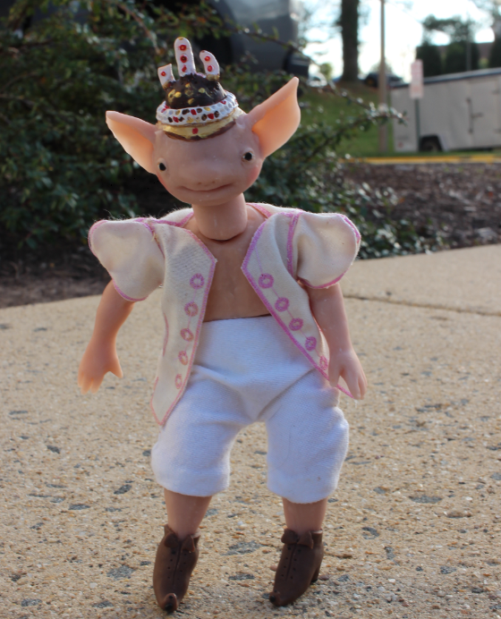
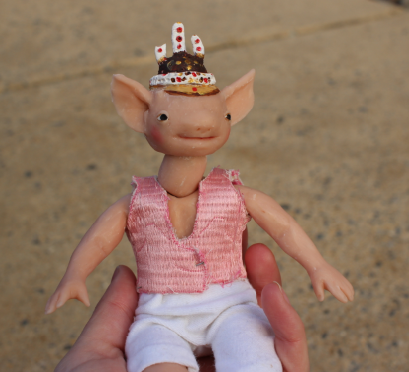
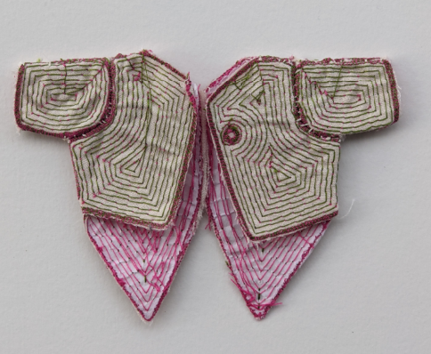

tiny generated overcoat patterns made with p5js and rendered through PEmbdoider
This project uses PEmbroider and P5js to create infinite coats to clothe this small friend. Using parameters and randomness, you can create and alter patterns and assemble them in real life. It works by using randomness to choose different features and alters their parametes(such as length and height). The variability is limited so that most patterns should fit.
Thank you to The STUDIO for Creative Inquiry, this project was suported by and made during my residency in the summer of 2020

Assembly Process
Step 1: Run Generator till you're happy with the pattern,
Step 2: load pattern into PEmbroider, must have an outline, but fill is optional. Image is scaled
Step 3: Export embroidery file and Embroider on machine
Step 4: cut out and sew pattern
Step 5: trim extra fabric and use fray-check or clear nail polish to stop edges from fraying
step 6: put coat onto small friend
Images
       